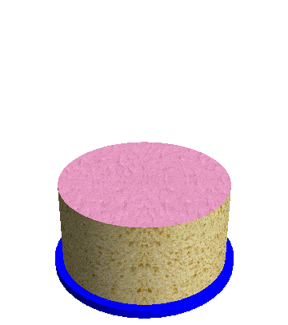

Adam plays the following game with his birthday cake.
He cuts a piece forming a circular sector of \(60\) degrees and flips the piece upside
down, with the icing on the bottom.
He then rotates the cake by 60 degrees counterclockwise, cuts an
adjacent \(60\) degree piece and flips
it upside down.
He keeps repeating this, until after a total of twelve steps, all the
icing is back on top.
Amazingly, this works for any piece size, even if the cutting angle
is an irrational number: all the icing will be back on top after a
finite number of steps.
Now, Adam tries something different: he alternates cutting pieces of
size \(x=\dfrac{360}{9}\) degrees,
\(y=\dfrac{360}{10}\) degrees and \(z=\dfrac{360 }{\sqrt{11}}\) degrees. The
first piece he cuts has size \(x\) and
he flips it. The second has size \(y\)
and he flips it. The third has size \(z\) and he flips it. He repeats this with
pieces of size \(x, y\) and \(z\) in that order until all the icing is
back on top, and discovers he needs \(60\) flips altogether.

Let \(F(a, b, c)\) be the minimum
number of piece flips needed to get all the icing back on top for pieces
of size \(x=\dfrac{360}{a}\) degrees,
\(y=\dfrac{360}{b}\) degrees and \(z=\dfrac{360}{\sqrt{c}}\) degrees.
Let \(G(n) = \sum_{9 \le a < b < c
\le n} F(a,b,c)\), for integers \(a,
b\) and \(c\).
You are given that \(F(9,10,11)=60,
F(10,14,16)=506, F(15,16,17)=785232\).
You are also given \(G(11)=60,
G(14)=58020\) and \(G(17)=1269260\).
staticintsignum(ll du, ll dv, ll c) { if (du == 0) returnsgn(dv); if (dv == 0) returnsgn(du); int su = sgn(du), sv = sgn(dv); if (su == sv) return su; ll uu = du * du; ll vv = dv * dv; ll cmp = uu * c - vv; int sc = (cmp > 0) - (cmp < 0); return su * sc; }
Quad norm_mod(const Quad &mod, ll c)const { Quad x = *this; Quad zero; while (x.cmp(zero, c) <= 0) x = x + mod; while (x.cmp(mod, c) > 0) x = x - mod; return x; }
static Dissection dissect(int a, int b, int c) { ll s = int_square(c); ll L; Quad X, Y, Z; if (s * s == c) { L = lcmll(lcmll(a, b), (int)s); X = {(ll)(L / a), 0}; Y = {(ll)(L / b), 0}; Z = {(ll)(L / s), 0}; } else { L = lcmll(a, b); X = {(ll)(L / a), 0}; Y = {(ll)(L / b), 0}; Z = {0, (ll)L}; }
Quad S = X + Y + Z; Quad total{(ll)L, 0};
ll m = 0; while ((S * (m + 1)).cmp(total, c) <= 0) ++m;
Quad extra = total - S * m; Quad pieceX = X; Quad pieceY = X + Y; Quad pieceZ = S;
ll elemX = 1, elemY = 1, elemZ = 1, elemE = 0; if (pieceX.cmp(extra, c) <= 0) ++elemE; if (pieceY.cmp(extra, c) <= 0) ++elemE;
auto step = [&](const Quad &src) -> Quad { Quad dst; if (src.cmp(pieceX, c) <= 0) { dst = total - Y - Z - src; } elseif (src.cmp(pieceY, c) <= 0) { dst = (total + X - Z) - src; } else { dst = (total + X + Y) - src; } dst = dst - S * m; dst = dst.norm_mod(S, c); return dst; };
vector<Quad> starts = {pieceX, pieceY, pieceZ}; for (const Quad &st : starts) { Quad src = st; for (;;) { Quad dst = step(src); if (dst == pieceX || dst == pieceY || dst == pieceZ) break; if (dst.cmp(pieceX, c) < 0) ++elemX; elseif (dst.cmp(pieceY, c) < 0) ++elemY; else ++elemZ; if (dst.cmp(extra, c) <= 0) ++elemE; src = dst; } }
ll N = m * (elemX + elemY + elemZ) + elemE; return {(int)N, (int)elemX, (int)elemY, (int)elemZ}; }
structCycle { vector<int> nxt; vector<uint8_t> fl; int flipped = 0;
Cycle() = default;
Cycle(int n, int piece) { nxt.resize(n); fl.resize(n); flipped = 0; for (int i = 0; i < piece; i++) { fl[i] = 1; nxt[i] = n - 1 - i; flipped++; } for (int i = piece; i < n; i++) { fl[i] = 0; nxt[i] = i - piece; } }
static Cycle fromOrbit(const vector<uint8_t> &flip) { int n = (int)flip.size(); Cycle c; c.nxt.resize(n); c.fl = flip; c.flipped = 0; for (int i = 0; i < n; i++) { c.nxt[i] = (i + 1 == n ? 0 : i + 1); if (c.fl[i]) c.flipped++; } return c; }
Cycle operator*(const Cycle &other) const { int n = (int)nxt.size(); Cycle r; r.nxt.resize(n); r.fl.resize(n); r.flipped = 0; for (int i = 0; i < n; i++) { int mid = nxt[i]; int to = other.nxt[mid]; uint8_t f = fl[i] ^ other.fl[mid]; r.nxt[i] = to; r.fl[i] = f; if (f) r.flipped++; } return r; } };
staticintmin_period_binary(const vector<uint8_t> &s) { int n = (int)s.size(); vector<int> l(n); for (int i = 1; i < n; i++) { int j = l[i - 1]; while (j > 0 && s[i] != s[j]) j = l[j - 1]; if (s[i] == s[j]) j++; l[i] = j; } int p = n - l[n - 1]; if (p > 0 && n % p == 0) return p; return n; }
static ll period_allup(const vector<uint8_t> &flip) { int n = (int)flip.size(); if (n == 0) return1; int p = min_period_binary(flip); int parity = 0; for (int i = 0; i < p; i++) parity ^= (int)flip[i]; return parity ? 2LL * p : 1LL * p; }
static ll hybrid_k(const Cycle &perm, int head) { int N = (int)perm.nxt.size(); vector<uint8_t> vis(N, 0); ll res = 0, mod = 1; vector<OrbitInfo> hard;
for (int i = 0; i < N; i++) if (!vis[i]) { vector<int> idx; int cur = i; while (!vis[cur]) { vis[cur] = 1; idx.push_back(cur); cur = perm.nxt[cur]; } int n = (int)idx.size(); vector<uint8_t> f(n), t(n); bool any = false; for (int j = 0; j < n; j++) { int id = idx[j]; f[j] = perm.fl[id]; t[j] = (id >= head); any |= t[j]; } ll per = period_allup(f); if (!any) { ll g = __gcd(mod, per); mod = mod / g * per; } else { hard.push_back({move(f), move(t), per}); } }
for (auto &o : hard) { Cycle base = Cycle::fromOrbit(o.flip); Cycle cur = base; ll early = -1; for (ll k = 1; k <= o.per; k++) { bool ok = true; for (size_t i = 0; i < o.flip.size(); i++) if (cur.fl[i] != o.target[i]) { ok = false; break; } if (ok) { early = k; break; } cur = cur * base; } if (early < 0) return0; ll merged = CRT2(res, mod, early % o.per, o.per); if (merged < 0) return0; ll g = __gcd(mod, o.per); mod = mod / g * o.per; res = merged; }
res %= mod; if (res == 0) res = mod; return res; }
structKey { int N, ex, ey, ez; }; structKeyHash { size_toperator()(const Key &k)constnoexcept { size_t h = (uint32_t)k.N; h = h * 1315423911u + (uint32_t)k.ex; h = h * 1315423911u + (uint32_t)k.ey; h = h * 1315423911u + (uint32_t)k.ez; return h; } }; structKeyEq { booloperator()(const Key &a, const Key &b)constnoexcept { return a.N == b.N && a.ex == b.ex && a.ey == b.ey && a.ez == b.ez; } };
static ll F(int a, int b, int c, unordered_map<Key, ll, KeyHash, KeyEq> &cache) { Dissection d = dissect(a, b, c); Key key{d.N, d.ex, d.ey, d.ez}; auto it = cache.find(key); if (it != cache.end()) return it->second;
int N = d.N; Cycle cx(N, d.ex); Cycle cy(N, d.ey); Cycle cz(N, d.ez);
Cycle perm0 = cx * cy * cz;
vector<uint8_t> vis(N, 0); ll l = 1; for (int i = 0; i < N; i++) if (!vis[i]) { vector<uint8_t> f; int cur = i; while (!vis[cur]) { vis[cur] = 1; f.push_back(perm0.fl[cur]); cur = perm0.nxt[cur]; } ll per = period_allup(f); ll g = __gcd(l, per); l = l / g * per; }
ll ans = 3 * l;
Cycle perm1 = cy * cz * cx; ll k1 = hybrid_k(perm1, N - d.ex); if (k1) ans = min(ans, 3 * k1 + 1);
Cycle perm2 = cz * cx * cy; ll k2 = hybrid_k(perm2, N - d.ex - d.ey); if (k2) ans = min(ans, 3 * k2 + 2);
cache.emplace(key, ans); return ans; }
static ll G(int n) { unordered_map<Key, ll, KeyHash, KeyEq> cache; cache.reserve(20000); ll sum = 0; for (int c = 11; c <= n; c++) for (int b = 10; b < c; b++) for (int a = 9; a < b; a++) sum += F(a, b, c, cache); return sum; }